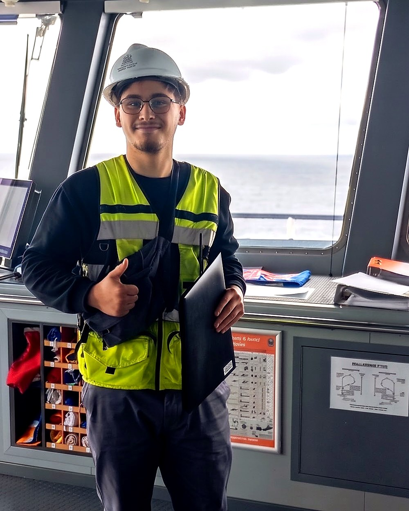
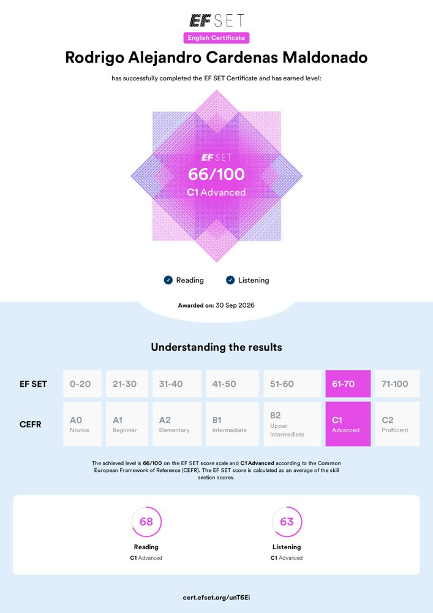
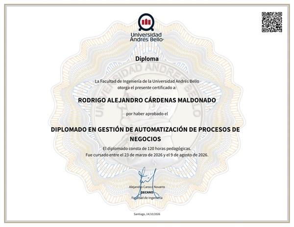
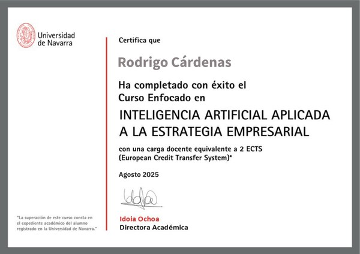
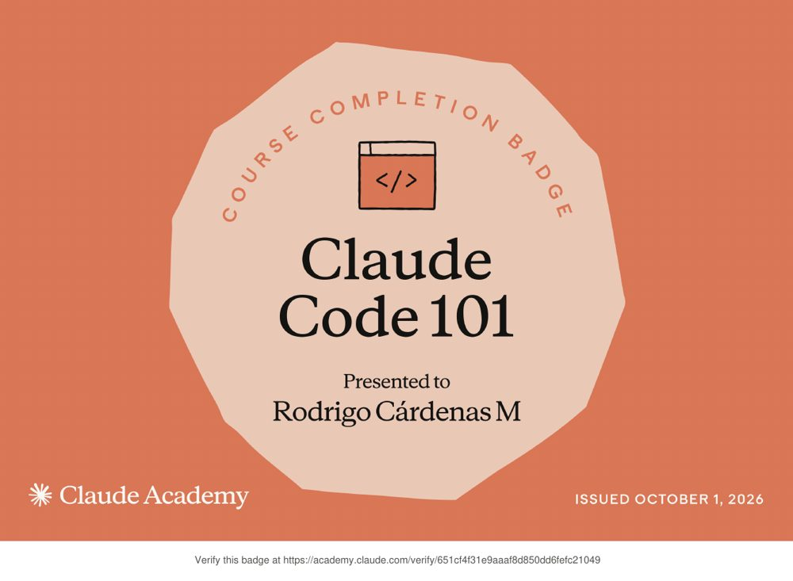
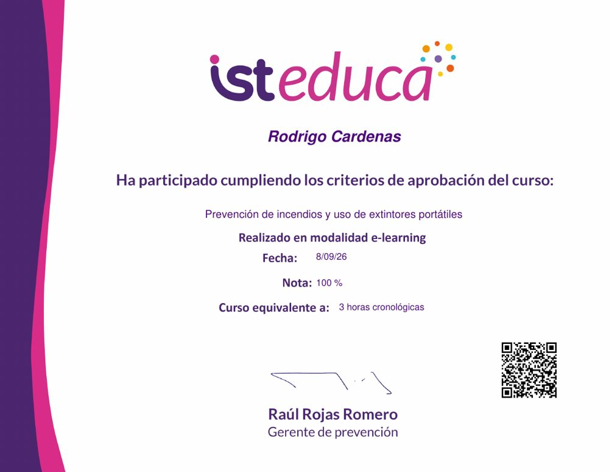
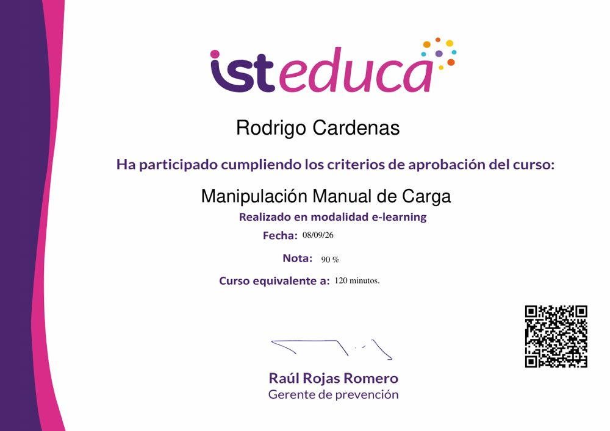
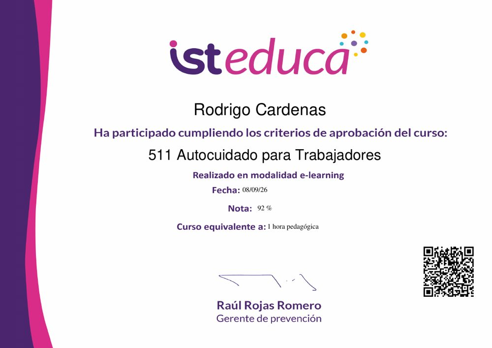

Trabajo en comercio exterior en Punta Arenas, la puerta a la Antártica. Reviso documentos, subo a los buques y armo mis propias herramientas para que los errores no lleguen a la Aduana.
Entre papeles y terreno.
Estoy en el departamento de carga internacional de Fast Cargo (Shackleton's Way). Cruzo BL, AWB, DTI, DUS y manifiestos para que cuadren entre sí, y bajo al puerto o subo a bordo cuando hay carga o descarga y algo no calza.
Gran parte de la carga es para expediciones, turismo polar y bases antárticas, así que coordino a diario con clientes, navieras y agencias de aduana, en español y en inglés.
Estudio Técnico en Comercio Exterior en INACAP (estoy egresando) y en 2027 sigo con Ingeniería en Negocios Internacionales.

Haz clic en cada uno para verlo completo o verificarlo.







Las hago con Claude Code para resolver problemas reales de la pega.
Lee los correos y documentos de cada operación, los cruza y avisa cuando algo no cuadra antes de que llegue a la Aduana. También lee documentos escaneados y sigue contenedores con las navieras.
Para practicar la licencia clase D con volante y pedales: dirección trasera, pallets, rack y circuito de conos.
Probar el simulador →Lee una oferta, saca las palabras clave que filtran los sistemas de selección y ajusta mi CV sin inventar nada.